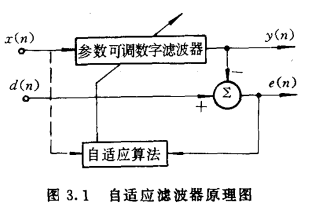

Z变换对：
X(z)=Z[x(n)]=n=−∞∑∞x[n]z−n
由Z正变换不难看出，一个时间序列x(n)的z变换为一z−1的n次多项式，其中每项的系数恰为时间序列对应点的值。通常X(z)（符合因果性）都可以展开成这样的形式：
X(z)=x[0](z−1)0+x[1](z−1)1+x[2](z−1)2+⋯
这样通过系数可以直接得到原时间序列。
展开的方法可以参考： 长除法
需要注意的是，这种方法得到的是原序列的数值形式，而非解析形式。对于有限长的原序列才比较合适这种方法。
Z变换除了幂级数形式非常好反变换，写成这样的形式也可以简单的找到对应的原序列：
F(z)=1−az−11=z−az
对应原函数如表：
| 时域函数x[n] |
频域函数X[z] |
| anϵ[n] |
z−az |
| nan−1ϵ[n] |
(z−a)2z |
通常（有理函数）可以将F(z)写成这样的形式，进行部分分式分解得到若干个这样的项：
zF(z)=zB0+z−v1B1+z−v2B2+⋯
再两边同乘z，得到上述形式项之和。这样就可以转变为简单形式之和从而方便的得到原序列了。
这个展开的方法称作部分分式展开，记有一有理函数G(z)，可以写成：
G(z)=D(z)N(z)=(z−z1)(z−z2)⋯(z−zn)N(z)=z−z1K1+⋯+z−znKn
在Z变换中，通常先做G(z)=zF(z)
这里先讨论D(z)无重根的情况。N(z)和D(z)均为z的多项式。需要注意的是为了方便通过变换令D(z)的zn项系数为1，并且G(z)必须为真分式（即分子次数比分母低），否则要先通过长除法将假分式转化为多项式与真分式之和。
部分分式展开的过程即求取待定系数K1,K2,⋯,Kn，如果表达式较为简单的话，可以直接用待定系数法求解。
下面给出一个求取系数的通用公式。如果对上式左右同乘(z−zi)，有：
(z−zi)D(z)N(z)=Ki+(z−zi)k=i∑z−zkKk
取z=zi的时候，右边第二项就是0了，只剩下Ki，因此可以得到无重根项的系数求解公式：
Ki=z→zilim[(z−zi)D(z)N(z)]
需要注意的是取等只能通过逼近取得，是一个00型不定式，通常该极限要通过洛必达法则求取：
Ki=z→zilim[(z−zi)D(z)N(z)]=z→zilimdzd[D(z)]dzd[(z−zi)N(z)]=z→zilim[D′(z)N(z)]
对于p阶重根的项，有相似的思路，左右同乘(z−zi)p：
(z−zi)pD(z)N(z)=(z−zi)p⎣⎡(z−zi)pKi,p+(z−zi)p−1Ki,p−1+⋯+(z−zi)Ki,1+k=i∑z−zkKk⎦⎤=Ki,p+Ki,p−1(z−zi)+⋯+Ki,1(z−zi)p−1+(z−zi)pk=i∑z−zkKk
可见要求得Ki,p−j只需要对上式两边求j次导，由此得到p阶重根的项的系数公式：
j=0,1,⋯,p−1
Ki,p−j=z→zilim{j!1dzjdj[(z−zi)pD(z)N(z)]}
f(n)=Z−1[F(z)]=2πj1∮CF(z)zn−1dz=C内诸极点∑Res[F(z)zn−1]
其中由复变可知，留数的计算公式为：
Res[F(z)zn−1]∣∣z=zi=[(z−zi)F(z)zn−1]∣∣z=zi
对于p阶极点，有：
Res[F(z)zn−1]∣∣z=zi=(p−1)!1{dzp−1dp−1[(z−zi)F(z)zn−1]}∣∣z=zi
这形式上与部分分式分解相同。
特别地，如果n=0，还会有zn−1带来的极点，也需要计算。
适合计算某点的值。
- 不能包含极点，以极点为界。
- 收敛域与序列关系的性质：
- M≤n≤N的有限长序列覆盖整个z平面，但有可能要去掉z=0或z=∞
- M≤n<∞右边无限长序列在距离原点最远极点的圆外部
- ∞<n≤N左边序列在距离原点最近极点的圆内部
- 无限长双边序列为环形
系统传输函数H(z)收敛域包括单位圆，即H(ejω)存在。
如果考虑的是一右边序列（通常都是），进一步有所有极点均在单位圆内。
系统传输函数H(z)收敛域包括z=∞。
这一性质可以如此理解：如果H(z)在z=∞处极点，即意味着H(z)有因子zp，由上文幂级数性质可知此时原序列h[n]在n<0时有值。
定义：
Rxy(m)=E[x(n)y(n+m)]
维纳-辛钦定理
有一平稳随机信号x[n]，通过线性系统h[n]，得到y[n]。
有：
Ryy(m)=Rxx(m)∗h[m]∗h[−m]
Pyy(z)=Pxx(z)H(z)H∗(z)=Pxx(z)H(z)H(z−1)=Pxx(z)∣H(z)∣2
对于x和y互相关，有（xy顺序？PPT定义？书上定义？）：
Pyx(z)=Pxx(z)H(z)
Pxy(z)=Pxx(z)H∗(z)
Pxxh(m)Pxyh(−m)Pyy
对于任意实平稳随机信号yn的有理功率谱Syy(z)可以唯一的表示为：
Syy(z)=σϵ2B(z)B(z−1)
其中B(z)为一有理函数，满足：
B(z)=D(z)N(z)
N(z)和D(z)均为满足最小相位性质的多项式。σϵ2用以调整常系数使得N(z)和D(z)最高次系数都为1。
X(z)=σϵ2可以看作是一白噪声的功率谱，σϵ2B(z)B(z−1)可以视作白噪声通过线性系统后的功率谱。
这表明：任何平稳随机信号yn都可以看作是由一个白噪声序列激励稳定因果线性时不变系统B(z)产生的输出。
最小相位：零点都在单位圆内
输入信号x(n)=s(n)+v(n)通过系统h(n)得到输出y(n)。
其中s(n)是原信号，v(n)是噪声，滤波器的目标是在带噪声的信号中滤出原信号，即使得y(n)=s^(n)。并且有：
s^(n)=x(n)∗h(n)=i∑h(i)x(n−i)
定义估计误差：
e(n)=s(n)−s^(n)
滤波器应当按照最小均方误差（MMSE）准则最小化误差：
ξ(n)=E[e2(n)]
设计维纳滤波器的过程即设计滤波器系数h(m)，令：
∂h(m)∂ξ(n)=E[2e(n)∂h(m)∂e(n)]=−2E[e(n)x(n−m)]=0
其中
E[e(n)x(n−m)]=0
称为正交方程。表明任何时候估计误差都与输入数据正交。
带入前若干式得：
E{[s(n)−i∑h(i)x(n−i)]x(n−m)}=0
变化即：
E[x(n−m)s(n)]=i∑h(i)E[x(n−m)x(n−i)]
Rxs(m)=i∑h(i)Rxx(m−i)
在姚天任. 数字信号处理理论算法与实现. 第一版. 中式左侧写成了Rsx(m)，是一个错误。
这个方程称作维纳-霍夫（Wiener-Hopf）方程。
维纳-霍夫方程没有规定滤波器h(i)的形式，h(i)可以取不同取值范围，主要使用的形式有：
- 0≤i≤N−1，FIR维纳滤波器。
- 0≤i<∞，因果IIR维纳滤波器。
- −∞<i<∞，非因果IIR维纳滤波器。
可用于：
- 滤波
- 平滑
- 预测
记N阶FIR维纳滤波器冲激响应：
h=[h(0),h(1),⋯,h(N−1)]T
输入信号为：
x(n)=[x(n),x(n−1),⋯,x(n−(N−1))]T
记x(n)的自相关矩阵为R
R=E[x(n)xT(n)]
记s(n)与x(n)的互相关矩阵为P
P=E[d(n)x(n)]
维纳-霍夫（Wiener-Hopf）方程可以写作：
P=Rh
解为：
hopt=R−1P
在自适应滤波一节中，对相关推导的写法可能更系统一些。基于矩阵微积分。
对维纳-霍夫（Wiener-Hopf）方程两边取Z变换：
Hopt(z)=Sxx(z)Ssx(z)
最好求。
如果滤波器的输入是方差为σϵ2白噪声，方程是好求解的，所以如果将输入信号先白化，再设计滤波器，就简单了。
设输入信号转化为方差为σϵ2的白噪声ϵ(n)
H(z)=B(z)1G(z)=B(z)1σϵ21[Sϵs(z)]+=B(z)1σϵ21[B(z−1)Sxs(z)]+
-
白化
B(z)是一个白化滤波器，对输入信号自功率谱Sxx(z)做谱分解得到：
Sxx(z)=σϵ2B(z)B(z−1)
-
和分解，取因果部分
B(z−1)Sxs(z)=[B(z−1)Sxs(z)]−+[B(z−1)Sxs(z)]+
-
逆Z变换，求冲激响应
对于有：
s(n)=as(n−1)+w(n)
x(n)=cs(n)+v(n)
的模型，其中w(n)是信号模型中的白噪声激励，方差为Q；v(n)是信号传输或测量中引入的加性白噪声，方差为R。a,c<1
这个模型是一阶AR模型，有：
Sss(z)=(1−az−1)(1−az)Q
对于一些功率谱，有如下特征：
Sxs(z)=(1−az−1)(1−az)cQ
Sxx(z)=(1−az−1)(1−az)c2Q+R
按照因果IIR维纳滤波器的设计流程，有：
-
谱分解
Sxx(z)=(1−az−1)(1−az)c2Q+(1+a2)R−aRz−1−aRz=σϵ2(1−az−1)(1−fz−1)(1−az)(1−fz)
待定系数σϵ2、f
解为：
⎩⎨⎧fσϵ2=R+c2PRa=R+c2P
P是Ricatti方程Q=P−R+c2PPRa2的正解
-
取因果部分
B(z−1)Sxs(z)=(1−az−1)(1−az)cQ/(1−az)(1−fz)=((1−az−1)(1−fz)cQ=1−az−1A+1−fzBz
待定系数求得A=1−facQ，有：
[B(z−1)Sxz(z)]+=1−az−1σϵ2G
其中G=σϵ2(1−fa)cQ，称为维纳增益。
最终求得：
Hc(z)=1−fz−1G
一个感兴趣的问题是滤波器已经得到最优解hopt后，最小的均方误差ξmin是什么。
直接带入计算：
ξmin(n)=E[s2(n)]−PTw∗
通常设计得出Hopt
最优时有
ξmin(n)=E[e(n)s(n)]=Res(0)
反变换Ses(z)
ξmin(n)ξmin(n)=2πj1∮Ses(z)z0−1dz=2πj1∮[Sss(z)−Hopt(z)Sxs(z−1)]z−1dz
围线C取单位圆
但是为什么？
先做一些符号规定：
s^(n∣n)→s^(n)
s^(n−1∣n−1)→s^(n−1)
由上节因果IIR维纳滤波器：
Hc(z)=1−fz−1G,f=a(1−cG)
s^(n∣n)=fs^(n−1∣n−1)+Gx(n)=as^(n−1∣n−1)+G[x(n)−acs^(n−1∣n−1)]
用n−1时s(n)的最佳线性估计s^(n−1∣n−1)得到……
自适应滤波是维纳滤波器的发展/推广，可以在工作中逐渐估计所需的统计特性。

d(n)称为参考信号，是自适应滤波器的输入之一，有：
e(n)=d(n)−y(n)
自适应滤波器的目标依然是最小化误差。
记L+1长的输入信号：
x(n)=[x(n),x(n−1),⋯,x(n−L)]T
对于单输入的自适应滤波器，其有L+1个参数构成权系数矢量：
w(n)=[w0(n),w1(n),⋯,wL(n)]T
输出为：
y(n)=xT(n)w(n)=wT(n)x(n)
均方误差为：
ξ(n)=E[e2(n)]=E[d2(n)+y2(n)−2d(n)y(n)]=E[d2]+E[(wTx)2]−2E[dwTx]+E[(wTx)2]=E[d2]+wTE[xxT]w−2E[dxT]w
如果记x(n)的自相关矩阵为R
R=E[x(n)xT(n)]
记d(n)与x(n)的互相关矩阵为P
P=E[d(n)x(n)]
ξ(n;w)=E[d2(n)]+wTRw−2PTw
这里转不转置定义比较乱，但是应该没错。
这在参数空间(ξ,w0,w1,⋯,wL)称作均方误差性能曲面。
求梯度：
∇ξ=2Rw−2P=0
可以解出最优参数：
w∗=R−1P
这称作最佳权矢量或维纳解，与FIR维纳滤波器的解一致。
但是矩阵求逆计算很复杂，所以有以下多种改进方法。
在空间(ξ,w0,w1,⋯,wL)中，等高线（定误差）有：
wTRw−2PTw=常数
将原点平移到w∗，得到权偏移矢量坐标系：
v=w−w∗
F(v)=vTRv=常数
有
∇F=2Rv=2R(w−w∗)=2R(w−R−1P)=2Rw−2P=∇ξ
主轴v′通过原点，形式为μv′；与椭圆F(v)正交的矢量可以用∇F表示，有：
2Rv′=μv′
(R−2μ)v′=0
这与R的特征矢量等式的形式一致：
(R−λnI)Qn=0
说明主轴v′是R的特征矢量。
将R对角化：
R=QΛQ−1
Λ=diag(λ0,λ1,⋯,λL)
Q=[Q0,Q1,⋯,QL]
分别为特征值和特征向量阵。
这表明进行变换
v′=QTv=Q−1v
后
∇ξ=2Λv′=2[λ0v0′,⋯,λLvL′]T
这个操作通过旋转将坐标轴变换到主轴上。
二次性能曲面的性质可以总结为：
- 输入信号自相关矩阵R的特征矢量阵确定了主轴。
- 旋转坐标系统v′确定了性能曲面等高线（一组同心超椭圆）的主轴坐标系统。
- R的特征值是特征曲面沿主轴的二阶导数。
w(t+1)=w(t)−μ∇ξ(n)
假设迭代计算频率与采样频率相同，变为：
w(n+1)=w(n)−μ∇ξ(n)
分析收敛性：略
第n步的权值：
w(n)=w∗+(I−2μR)n[w(0)−w∗]
最低误差：
ξmin=E[d2[n]]−PTW∗
学习曲线时间常数τmse：
(rmse)k=rk2=(1−2μλk)2
误差下降到：
ξ(0)−ξminξ(n)−ξmin=rmsen
rmseτmse=e−1
时
(τmse)k=4μλk1
最小均方（LMS）算法，不要求脱线计算。
用平方误差估计均方误差，有：
∇ξ≈∂w∂(e2(n))=2e(n)∂w∂(d(n)−wTx)=−2e(n)x(n)
用这个方法估计是存在误差/噪声的：
cov[v(n)]≈μξminI
失调量M：
M=ξmin超量MSE≈μtr(R)
tr(R)
失调量、学习曲线时间常数是折衷
自适应递归最小二乘方（RLS）算法：
用时间平均的最小化准则替代均方误差。对于误差信号增加遗忘因子λ，误差函数为：
ϵ(n)=k=0∑nλn−ke2(k)
对于非平稳信号，更好的进行跟踪。
求梯度，令：
∇ϵ(n)=k=0∑nλn−k⋅2e(k)∂w∂(d(k)−xTw)=−2k=0∑nλn−k[d(k)−xTw]x=0
得到：
[k=0∑nλn−kxxT]w=k=0∑nλn−kd(k)x
记：
R(n)=k=0∑nλn−kxxT
P(n)=k=0∑nλn−kd(k)x
正交方程变为：
Rw=P
最小二乘方准则的维纳解为：
w∗=R−1P
实际操作中对于平稳随机信号只能观察到若干有限个取样值：
xN(n)={x(0),x(1),⋯,x(N)}
由此对自相关函数进行估计：
R^xx(m)=N1n=0∑N−1−∣m∣x(n)x(n+m)
这是一种渐进无偏估计，称之为取样自相关函数。
由维纳-辛钦定理，经过傅里叶变换（指DFT）得到功率谱估计：
S^xx(ω)=N1∣X(ejw)∣2
这个方法的问题是：
- 频率分辨率不高
- 有限样本等效于加窗，导致频谱泄漏
相比于经典谱估计，现代谱估计先验地假设随机信号由一定的模型产生。这个想法由谱分解带来的知识支撑。
设随机信号由一个均值为零、方差为σ2的白噪声u(n)通过一线性系统H(z)产生，H(z)有：
H(z)=A(z)B(z)=n=0∑panz−nn=0∑qbnz−n
输出信号x(n)的功率谱为：
Sxx(z)=σ2H(z)H∗(z∗1)=σ2A(z)A∗(z∗1)B(z)B∗(z∗1)
通常系统冲激响应h(z)是实信号，有：
Sxx(z)=σ2H(z)H(z−1)=σ2A(z)A(z−1)B(z)B(z−1)
不失一般性，可以调整系数使a0=1，b0=1。
根据H(z)性质的不同，可以分为几种不同的模型：
除了a0=1，其他ai均为零。
称为q阶滑动平均模型（Moving-Average, MA），是全零点模型。
HMA(z)=B(z)
除了b0=1，其他bi均为零。
称为p自回归模型（Auto-regressive, AR），是全极点模型。
HAR(z)=A(z)1
所有ai，bi不全为零。
通常AR模型好解。
对于p阶AR模型，有p个AR系数。
由
HAR(z)=A(z)1=1+k=1∑pakz−k1
输出为：
x(n)=−k=1∑pakx(n−k)+u(n)
- 逆Z变换法
根据AR模型：
u(n)⟶H(z)=A(z)1⟶x(n)
由此有：
Sxx=A(z)A(z−1)σ2
略作变换，得到：
A(z)Sxx=A(z−1)σ2
Sxx=A(z−1)σ2+(1−A(z))Sxx
Sxx=A(z−1)σ2+k=1∑pakSxxz−k
两遍逆Z变换，得到：
Rxx(m)=k=0∑pσ2δ(m+k)+k=1∑pakRxx(m−k)
由于是因果信号，去掉m<0的冲激，得到：
Rxx(m)=δ(m)+k=1∑pakRxx(m−k)
Yule-Walker方程：
Rxx(m)=⎩⎨⎧−k=1∑pakRxx(m−k)+σ2,−k=1∑pakRxx(m−k),m=0m>0
矩阵形式：
⎣⎡R(0)R(1)⋮R(p)R(1)R(2)⋮R(p−1)⋯⋯⋱⋯R(p)R(p−1)⋮R(0)⎦⎤⎣⎡1a1⋮ap⎦⎤=⎣⎡σ20⋮0⎦⎤
Levinson算法：由AR(k)模型参数迭代计算AR(k+1)的参数。
已知k阶参数{ak,1,ak,2,⋯,ak,k,σk2}，对其Yule-Walker方程增广，增加一列和一行
⎣⎡R(0)R(1)⋮R(k)R(k+1)R(1)R(2)⋮R(k−1)R(k)⋯⋯⋱⋯⋯R(k)R(k−1)⋮R(0)R(1)R(k+1)R(k)⋮R(1)R(0)⎦⎤⎣⎡1ak,1⋮ak,k0⎦⎤=⎣⎡0σk20⋮0Dk⎦⎤
其中Dk为
Dk=i=0∑kak,iR(k+1−i),ak,0=1
对比k+1阶的Yule-Walker方程：
⎣⎡R(0)R(1)⋮R(k)R(k+1)R(1)R(2)⋮R(k−1)R(k)⋯⋯⋱⋯⋯R(k)R(k−1)⋮R(0)R(1)R(k+1)R(k)⋮R(1)R(0)⎦⎤⎣⎡1ak+1,1⋮ak+1,kak+1,k+1⎦⎤=⎣⎡σk+120⋮00⎦⎤
将增广的k阶方程行列倒序，左式左侧项不变。倒序后与倒序前线性组合得到：
⎣⎡1ak+1,1⋮ak+1,kak+1,k+1⎦⎤=⎣⎡1ak,1⋮ak,k0⎦⎤−γk+1⎣⎡0ak,k⋮ak,11⎦⎤
γk+1称为反射系数。
又有：
⎣⎡σk+120⋮00⎦⎤=⎣⎡σk20⋮0Dk⎦⎤−γk+1⎣⎡Dk0⋮0σk2⎦⎤
得到：
γk+1=σk2Dk
σk+12=σk2−γk+1Dk=(1−γk+12)σk2
对于p阶模型，递推到指定阶数就行。
前向预测 后向预测
AR(k)模型参数为一个序列：
Ak(z)=i=0∑kak,0z−i,ak,0=1
倒序多项式为：
AkR(z)=z−kAk(z−1)
在Levinson-Durbin算法中，递推公式可以写为：
Ak+1(z)=Ak(z)−γk+1z−1AkR(z)
Ak+1R(z)=z−1AkR(z)−γk+1Ak(z)
写成矩阵形式：
[Ak+1(z)Ak+1R(z)]=[1−γk+1−γk+1z−1z−1][Ak(z)AkR(z)]
前向预测误差，ak,0=1：
ek+(n)=i=0∑kak,ix(n−i)=x(n)−[−i=i∑kak,ix(n−i)]=x(n)−x^(n)
Ek+(z)=Ak(z)X(z)
后向预测误差：
ek+(n)=i=0∑kak,k−ixn−i,ak,0=1
Ek+(z)=AkR(z)X(z)
可见误差与模型参数有对应关系：
[Ek+1+(z)Ek+1−(z)]=[1−γk+1−γk+1z−1z−1][Ek+(z)Ek−(z)]
对应时域关系式：
[ek+1+(n)ek+1−(n)]=[1−γk+1−γk+11][ek+(n)ek−(n−1)]
对于有M个复正弦波的模型，是AR和MA参数相同的特殊的ARMA(M,M)
- 在低信噪比情况下，AR谱估计结果不理想，为了提
高谱估计结果的精度，要降低噪声的影响。
未知序列e(n)激励未知系统V(z)=A(z)G(z),a0=1得到已知序列s(n)。
令G(z)=1，为P阶AR模型。
s(n)满足：
s(n)=−i=1∑Pαis(n−i)+Ge(n)
有P′阶的预测器，目标预测值：
S^(n)=−i=1∑P′αis(n−i)
预测误差：
ϵ(n)=s(n)−s^(n)=s(n)+i=1∑P′αis(n−i)
σϵ2=n∑ϵ2(n)=n∑⎩⎨⎧s2(n)+2s(n)i=1∑P′αis(n−i)+[i=1∑P′αis(n−i)]2⎭⎬⎫=n∑{s2(n)}+2i=1∑P′αi{n∑s(n)s(n−i)}+i=1∑P′j=1∑P′αiαj{n∑s(n−i)s(n−j)}
要MMSE，必须满足其一
- P′=P，α^i=αi
- P′>P，超出的部分α^i=0
求
∇σϵ2=0
令ϕ(i,j)=σns(n−i)(n−j)
改写为：
σϵ2=n∑{s2(n)}+2i=1∑P′αiϕ(0,i)+i=1∑P′j=1∑P′αiαjϕ(i,j)
求导：
∂αi∂σϵ2=2ϕ(0,i)+2j=1∑P′αjϕ(i,j)=0
得到
⎩⎨⎧j=1∑P′αjϕ(i,j)=−ϕ(0,i)⋯⋯k=1,2,⋯,P
- 高斯消元法解线性方程组：p3
- Toeplitz矩阵求解：p2